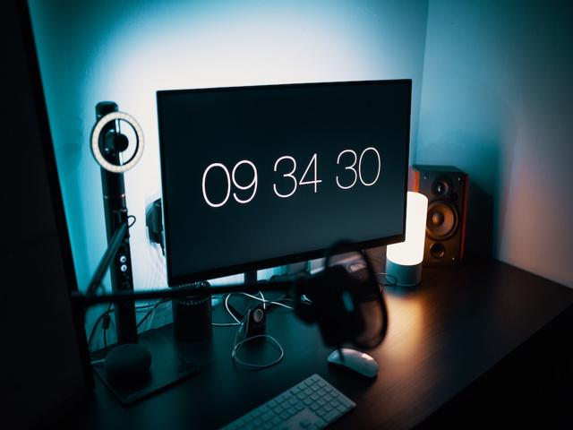
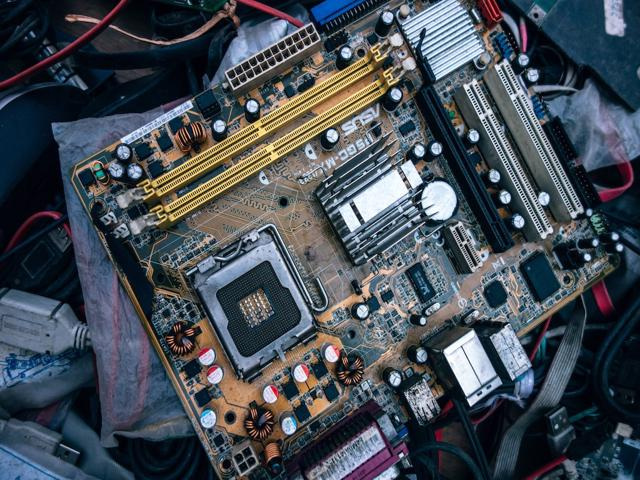
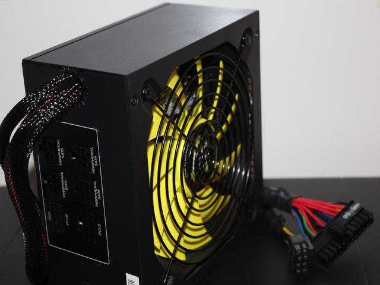
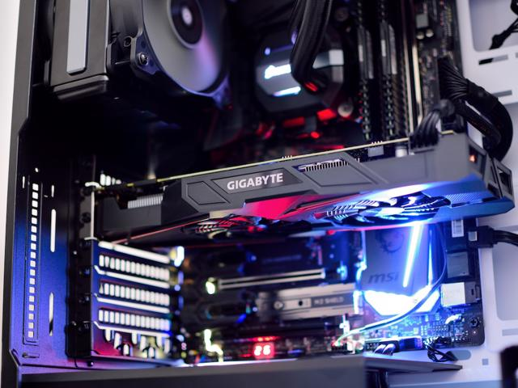
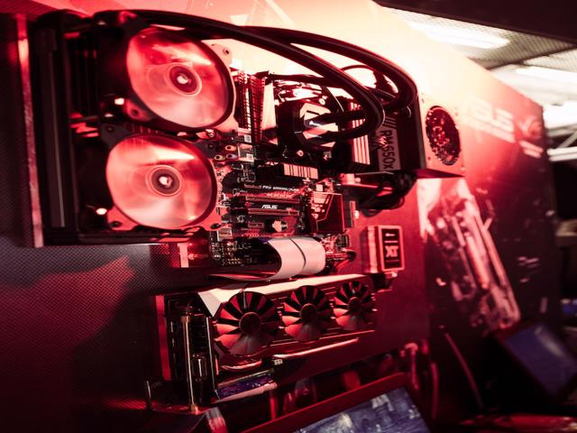
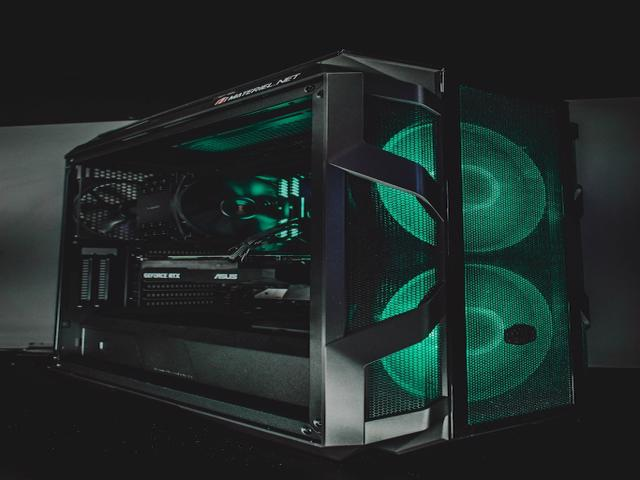

Ram
This is what's important for those people who love to leave thousands of tabs in the background

Now this is important, you need to be able to SEE what your doing, and its also a plus to have a monitor with built in speakers if not separate!
A little bit about the parts, The most expensive are the processor, graphics card, and ram at the moment, Ranging from $100 to $5000 depending on how high spec you want your system to be.
Think of this piece as the base camp of where all the pieces reside. The Motherboard is basically what holds your pieces together to allow them to interact.
This is what's important for those people who love to leave thousands of tabs in the background
The power supply is the most important because without it, it won't turn on. A good power supply can handle high loads while also try to be energy efficient and not skyrocket your electric bill.
This is the main component to which we all know as the "brain" of the computer. It computes everything that you ask of it and it can either be slow or fast. I'm sure we've had experience with old processors.

The Most important part of having a processor is a way to cool it, because it gets HOT-HOT-HOT!!!

Now you may have heard something about bitcoin in the news, well this is what people were after and let me tell you that they can be EXPENSIVE! Mostly it's to show you're screen and help with editing or playing video games.
These are needed for cooling the rest of the board and their parts!
For the Hard Drive, it depends on how fast you want it, but it's safe to have an ssd for booting and a Platter Drive for storing large quantities of items.

This is where you can get away with saving money, but it's also where you can have the most fun in the end.
To some, building a pc is an art that needs to be showcased and to others its just about the performance and just stashes the desktop away.
I hope you had a fun reading about the parts to a Desktop.
Thank you for visiting and Have a nice day!